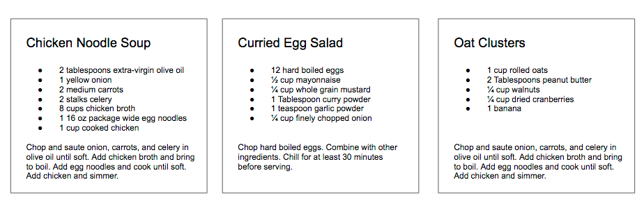
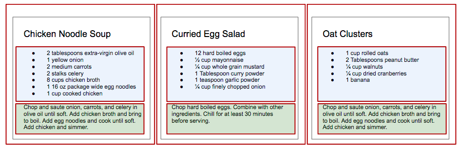

Client-side web pages / Single Page Apps (SPA)
- Consider Facebook: Notice that when you scroll down the page, you never get to the bottom. Instead, new posts get inserted and the list seems to go on “forever”
- This is an application of a technique called AJAX: Asynchronous Javascript and XML
- (Although, we tend to use JSON more than XML these days.)
- JavaScript running on the browser makes an HTTP request back to the server
- The server returns raw data (usually in XML or JSON form),
- The client-side JavaScript then inserts that data into the DOM (e.g., creates new posts and puts them at the end of the list.)
- This technique often involves creating new DOM elements on the fly (like we say last week).
- Client-side frameworks like React, Angular, and Vue take this to the extreme and construct the entire DOM on the client “on the fly”
- Such apps are called “single-page apps” because they are effectively just one page that is repeatedly updated.
- What are the advantages and disadvantages of such an approach?
- Advantages
- Faster
- Can feel more like a native app
- Can re-use the server for both web and mobile products
- Disadvantages
- “Deep linking” can be challenging.
- SEO can be challenging (but possible if you are careful)
- Code quality of SPAs may be lower (e.g., more redundancy)
- Cross-site scripting is a bigger issue.
- Advantages
Client-side “Quick Start”
- Every web page contains an object named
document. This object describes the entire web page. - This object has several methods that allow us to grab specific elements
getElementById()getElementsByClassName()getElementsByTagName()getElementsByName()- Notice that all but the first one return a list of elements.
- Can run the above methods on other elements to search only part of the DOM.
- Once we have a “handle” on an element, we can manipulate it. We can
- Change the text
- Remove it from the DOM
- Add sub-elements to it.
- Change it’s style
- Load
basicDOMManipulation.html. Open the console and rundocument.getElementById('favorite').innerHTML += " (My favorite")document.getElementById('favorite').style.color = 'green'document.getElementById('favorite').style.visibility='hidden'document.getElementById('favorite').style.display='none'document.getElementById('favorite').style.display='inline'
- Many fancy UI tricks are simply manipulating the DOM.
- First section: Callbacks
- Second section: Hiding elements
- Third section: Adding elements to the DOM
- Fourth section: Change listener / showing error message
- Note: Most of the
getmethods return a DOM list. This is not an array, so methods likeforEachdon’t work. - Look at
sortingStudents.js - Look at
varVsLetSubtlty.js(shows howletcorrectly sets up closure) - Look at
eventVsThis.html(also shows how to clone nodes, when necessary) - Look at
placementOfScripts.html(also shows how to clone nodes, when necessary)
React
- We can write JavaScript that will create an entire web page “on the fly”
- Look at
clientSideDomCreation.{html,js}
- Look at
- Using raw JavaScript would obviously be tedious, so React provides some helper methods
- Look at
reactDomCreation.{html,js} - (You will need to launch a server – won’t run directly from a file)
- Look at
- Even this syntax would get tedious quickly, so React provides a more HTML-like syntax called JSX.
- Browsers can’t handle JSX directly. Code containing JSX needs to first be “transpiled” into straight JavaScript.
- Look at
jsx1.jsx - To convert JSX to JavaScript “by hand”
- Install the Babel Command Line Interface:
npm install --save-dev @babel/core @babel/cli - Install the React Preset for Babel:
npm install @babel/preset-react - Run
npx babel --presets=@babel/preset-react jsx1.jsx(npx babelis a short-cut for./node_modules/.bin/babel)
- Install the Babel Command Line Interface:
- Notice how the “html-like” syntax is converted into “regular” javaScript.
- (Note: The
jsxextension is not necessary, I use it only because it makes VS Code happy.)
- (Note: The
- Like EJS and other templating languages, we can mix the JSX with “regular” javascript.
- Look at
jsx2.jsx - How is this helpful? Imagine loading
statesfrom an API call.
- Look at
- With React/JSX we can define our own components. (It’s kind of like making up our own HTML tags on the fly.)
- A standard design approach is to break a page down into hierarchical (i.e., nested) components.
- Consider displaying recipes 
- We can define components like this: 
Recipe,IngredientsList,Instructions,Ingredient(not shown)
-
To create a new component, simply write a function that returns a React element:
function IngredientsList() { return React.createElement( "ul", {className: "ingredients"}, React.createElement("li", null, "1 cup unsalted butter"), ... React.createElement("li", null, "0.5 teaspoon salt"), ); } -
Better yet, use JSX:
function IngredientsList() { return ( <ul className='ingredients'> <li>1 cup unsalted butter</li> ... <li>0.5 teaspoon salt</li> </ul> ); } -
Even better: rather than hard-coding the ingredients, we can pass them as a parameter called
propsfunction IngredientsList(props) { return ( <ul className='ingredients"> {props.list.map((ingredient, i) => ( <Ingredient key={i} {...}> ))} ); } - Look at
recipe1.jsxin the sample code.
JSX Details
- JSX “in-depth” https://reactjs.org/docs/jsx-in-depth.html
- User-defined components must be capitalized.
- (Well, to be precise, the names those objects are assigned to must be capitalized.)
- built-in types like
<div>and<span>are lower-case
- The JSX element type can’t be a general expression.
- If the component you want to use is conditional, then use an
ifstatement to assign the type to a variable.
- If the component you want to use is conditional, then use an
- Booleans, null, and undefined are ignored.
- However, 0 is not ignored (i.e., don’t assume all “falsy” values are ignored.)
- Shortcuts:
- You can set a prop to a string literal:
<MyComponent message="hello, world."> - Props default to true
- Use the spread operator to pass an existing props object
- Long way:
<Greeting firstName='Ben' lastName='Hector" /> - Short way: `const props = {firstName: ‘Ben’, lastName: ‘Hector’}; <Greeting {…props}/>
- This is especially helpful when passing props down through a hierarchy.
- Long way:
- You can set a prop to a string literal:
Same thing from a different perspective:
Ingredient
- Using React, you get to “define new tags” to represent one component of your page/UI.
- e.g.,
<Ingredient>
- e.g.,
- Forget everything else for a moment, and imagine someone “gives” you a new
<Ingredient>tag:- anywhere you put
<Ingredient>in your page, an ingredient appears.
- anywhere you put
- So, how are these components defined?
- Just a function that returns an element:
function Ingredient() { return React.createElement("li", null, "This is an ingredient")}
- But, we normally would use JSX to define that element:
function Ingredient() { return <li>This is an ingredient</li>;}
- However, you need to provide additional information: You need to specify the
- amount
- measurement
- name
<Ingredient amount="1" measurement="cup" name="Pine Nuts">- (Generally, these wouldn’t be hard-coded, but I did that here to keep things simple)
- The attributes become a parameter to the function.
- However, rather than having one parameter per attribute, they are all combined into a single object
(typically called
props)function Ingredient(props) { return <li> {props.amount} {props.measurement} {props.name} </li>; }
- You can also use a JavaScript syntax short-cut called “object deconstruction”
{amount, measurement, name} = props- Can do the same thing with a parameter
function Ingredient({amount, measurement, name}) { return <li> {amount} {measurement} {name} </li>; }
- Summary: Define a new component with a function that takes an object (key/value pairs) as input
and returns a DOM object as output.
- Typical way of defining that DOM object is to use JSX.
IngredientList
- Now we want a list of ingredients.
- Assume we “magically” get this component as part of HTML:
<IngredientList>- But, we need to provide an array of ingredients for it to display
<IngredientList ingredients="[{amount: '1', measurement: 'cup', ...}]>
- How to implement:
- See
IngredientListDemoinrecipe1.jsx
- See
You could do this:
function IngredientListDemo(props) {
return React.createElement("ul", null,
IngredientList(props.ingredients[0]),
IngredientList(props.ingredients[1]),
IngredientList(props.ingredients[2]),
...
)
}
But, it would be more common to use JSX
function IngredientListDemo(props) {
let list = props.ingredients;
return <ul className="ingredients" >
<Ingredient amount={list[0].amount} measurement={list[0].measurement} name={list[0].name} key='0' />
<Ingredient amount={list[1].amount} measurement={list[1].measurement} name={list[1].name} key='1' />
<Ingredient amount={list[2].amount} measurement={list[2].measurement} name={list[2].name} key='2' />
<Ingredient amount={list[3].amount} measurement={list[3].measurement} name={list[3].name} key='3' />
</ul>;
}
But, rather than list each ingredient by hand, use a loop:
function IngredientList(props) {
return <ul className="ingredients" > {
props.ingredients.map((item, index) => (
<Ingredient amount={item.amount} measurement={item.measurement} name={item.name} key={index} />
))}
</ul>
}
Move the call to map before return so it is clearer what’s going on:
let ingredientList = props.ingredients.map((item, index) => (
<Ingredient amount={item.amount} measurement={item.measurement} name={item.name} key={index} />
))}
Another shortcut:
- Notice the redundancy here:
<Ingredient amount={item.amount} measurement={item.measurement} name={item.name} key={index} /> - The syntax
...itembreaks the object apart into separate variables (amount = foo.amount, etc.)<Ingredient {...item} key={index} />
State
- You can put a callback on a DOM element’s
onClickproperty.<h2 onClick={() => console.log(You clicked on recipe ${props.name})}> {props.name} </h2>
- Suppose we only want to show one recipe at a time. We need to remember which recipe we are looking at.
- We could pass the
Menucomponent a list of recipes and store index of which one to show.recipe2.jsx Menu_Broken
- The button clicks work, but the view isn’t updated.
- Nothing is triggering the page to re-render.
- Simply having a local variable doesn’t quite do what we need.
- The state needs to be stored somewhere that react can watch it.
- Also, notice that
currentIndexcan only be accessed/modified from within the function.
- Look at
ReactRecipe::stateUsingClosures.js - By wrapping the state up in a closure, we can abstract away the details of how the value is stored.
- It could be a local variable, an entry in a hash table, stored in a DB, etc.
function Menu({ title, recipes }) {
int currentIndex = recipes.length /2;
const recipe = recipes[currentIndex];
Bootstrap and React
- To install Bootstrap in a React project:
- Add
npmmodulesbootstrapandreact-bootstrap - Add
import 'bootstrap/dist/css/bootstrap.css'toindex.js
- Add
- Bootstrap in
AuthorsForm:form-groupandform-controlclasses (https://getbootstrap.com/docs/4.3/components/forms/)btnandbtn-primary
- Bootstrap in
AuthorList- The list is
container-fluid - The table is set with
tableandtable-hover(https://getbootstrap.com/docs/4.3/content/tables/) - Each table row is marked as a
rowwithcol-md-3so table stacks up at a medium size.
- The list is
Conventional React Deploy
- Including React from CDN is for development only.
- Conventional approach is to bundle all the code into a single .js file.
- Webpack (https://webpack.js.org): Tool used to bundle many JavaScript files into a single
.jsfile - Babel: Converts code from one form to another. Used for two purposes:
- Convert JSX to JavaScript
- Convert imports into form that all browsers will understand.
- Webpack (https://webpack.js.org): Tool used to bundle many JavaScript files into a single
- If you used
create-react-appyou can just runnpm run build- Look in
builddirectory. You’ll see everything you need ready to go. - Launch a simple server (e.g., Python) and you are all set!
- Look in